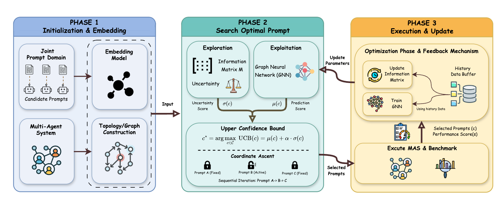
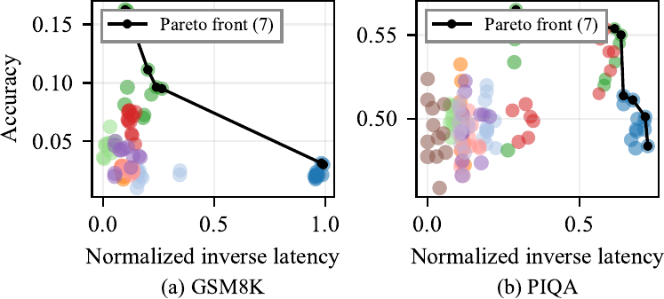
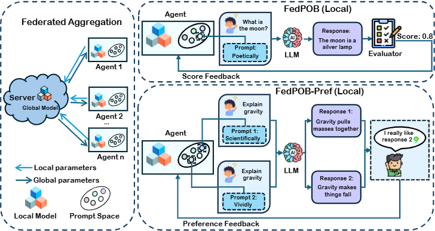
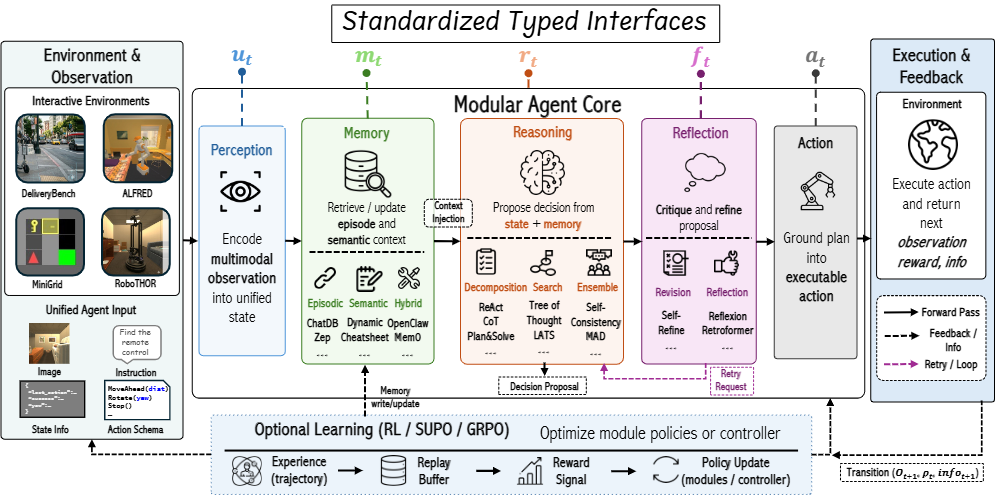
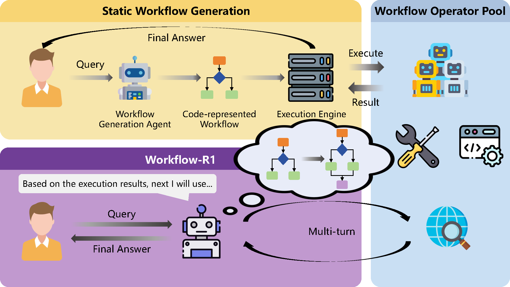

|
Zhi Hong Hi there!👋 I am a research intern (Star Bridge Program) at Microsoft Research Asia (MSRA), advised by Bei Liu, working on LLM agents. Before that, I was fortunate to work with Prof. Zhongxiang Dai at CUHK-Shenzhen as a research assistant on multi-agent systems. I received my B.Eng. in Automation (Control Science and Engineering) and B.Sc. in Mathematics from South China University of Technology (SCUT) in July 2026. My research spans large language models and machine learning: multi-agent systems, harness engineering, and embodied agents on the LLM side; bandits, reinforcement learning, and federated learning on the ML side. I am actively seeking PhD opportunities. Feel free to reach out to discuss research ideas or potential collaborations! Email / CV / Google Scholar / Github |
News
|
Selected Publications* denotes equal contribution, † denotes corresponding author. |
|
 |
MASPOB: Bandit-Based Prompt Optimization for Multi-Agent Systems with Graph Neural Networks
Zhi Hong*, Qian Zhang*, Jiahang Sun, Zhiwei Shang, Mingze Kong, Xiangyi Wang, Yao Shu†, Zhongxiang Dai† Paper ICML'26, Spotlight Presentation (Top 2.2% of 23,918 submissions) |
Preprints & Under Review |
|
|
 |
Cost-Aware Multi-Objective Bandits: Theory and Application to Budgeted LLM Configuration Evaluation
Bo Xue, Zhi Hong, Jiayi Li, Yuanyu Wan, Ji Cheng, Shuang Qiu Paper Preprint'26 (Under Review) |
|
 |
FedPOB: Sample-Efficient Federated Prompt Optimization via Bandits
Pingchen Lu*, Zhi Hong*, Zhiwei Shang, Zhiyong Wang, Yikun Ban, Yao Shu, Min Zhang, Shuang Qiu, Zhongxiang Dai† Paper Preprint'25 (Under Review) |
|
 |
AgentSpec: Understanding Embodied Agent Scaffolds Through Controlled Composition
Jixuan Chen, Jianzhi Shen, Haoqiang Kang, Zhi Hong, Qingyi Jiang, Soham Bose, Yiming Zhang, Leon Leng, Amit Vyas, Lingjun Mao, Siru Ouyang, Kun Zhou, Lianhui Qin Paper Preprint'26 (Under Review) |
|
 |
Workflow-R1: Group Sub-sequence Policy Optimization for Multi-turn Workflow Construction
Mingze Kong, Zikun Qu, Zhongquan Zhou, Pengyu Liang, Xiang Li, Zhiwei Shang, Zhi Hong, Kaiyu Huang, Zhiyong Wang, Zhongxiang Dai† Paper Preprint'26 (Under Review) |
Education |
|
South China University of Technology (SCUT), Guangzhou, China
2022.09 – 2026.07 Dual-Degree program: B.Eng. in Automation (Control Science and Engineering) & B.Sc. in Mathematics and Applied Mathematics GPA: 3.84 / 4.0 Rank: 3 / 24 |
Research Experience |

|
Microsoft Research Asia (MSRA), Visual Computing Group
Research Intern (Star Bridge Program) 2026.07 – Present Conducted research on LLM agents, including social simulation and harness engineering. Advisor: Bei Liu |
|
The Chinese University of Hong Kong, Shenzhen (CUHK-Shenzhen), School of Data Science
Research Assistant 2024.09 – 2026.07 Conducted research on multi-agent systems to enhance intelligence in large language models. Advisor: Prof. Zhongxiang Dai |
Academic Service
|
Honors & Awards
|
Talks
|
Skills & Interests
|
|
Template courtesy: Jon Barron. |